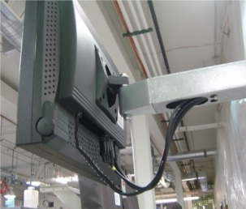
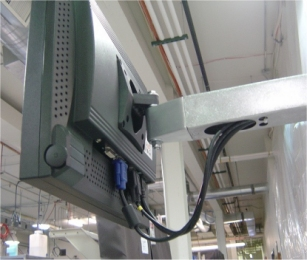

This procedure describes how to assemble the peripherals on the cart before connecting the peripherals to the UniCel DxI 600 instrument or the UniCel DxI 800 instrument.
Pre-requisite: Confirm that the peripherals cart is assembled correctly.
Attach the monitor to the tilt arm on the peripherals cart.
Remove the base stand from the monitor.
Attach the monitor to the tilt arm mechanism (four screws are supplied with the cart).
Adjust the tilt arm mechanism tension, and tilt the monitor to the preferred viewing angle.
Note: Verify that the monitor pivots up and down and rotates smoothly, but also remains in position after adjusting.
Place the peripherals on the cart.
Place the PC on the lower shelf of the cart. The PC can be placed on the middle shelf next to the printer.
Note: Position the PC with the power supply vent facing up.
(Optional: Skip this step if an UPS is not required by owner)
Place the UPS on the lower shelf of the cart with the PC.
Note: PC backup UPS is no longer included in the installation kit. Option: obtain an UPS from BCI (N/A OUS) or locally source one - must meet BCI UPS Power Ratings: Output Power Capacity => 1300VA or 780 Watts, Output Voltage= 120V, Input Voltage= 78 - 147 (120V Nominal).
Place the printer on the cart.
If this printer is a new install, remove the printer from its packaging and prepare the printer according to the manufacturers instructions.
Caution: Do not load any of the software provided by the printer manufacturer. Loading unknown software can affect the operation of the system PC.
Place the printer on the middle shelf with the front of the printer facing the front of the cart.
Position the keyboard and mouse on the cart.
Place the keyboard and wrist rest onto the keyboard tray.
Place the mouse and mouse pad onto the top shelf. If using the optional keyboard tray mouse holder, place the mouse on the holder.
Place the bar code reader in its holder.
Route the cables for the monitor, mouse, and keyboard through the access points to achieve a neat appearance.
Note: Verify adequate cable length to allow tilting or pivoting of the monitor. Place a tie-wrap on the cables where they enter the monitor arm to maintain sufficient cable length for strain relief.
Figure 8: Monitor with Touchscreen USB cable

Figure 9: Monitor with Touchscreen serial cable

Connect the power strip (included with NAO instrument sales groups) to the rear post of the cart using the screws provided on the post.
Connect the cables from the peripherals to the computer.